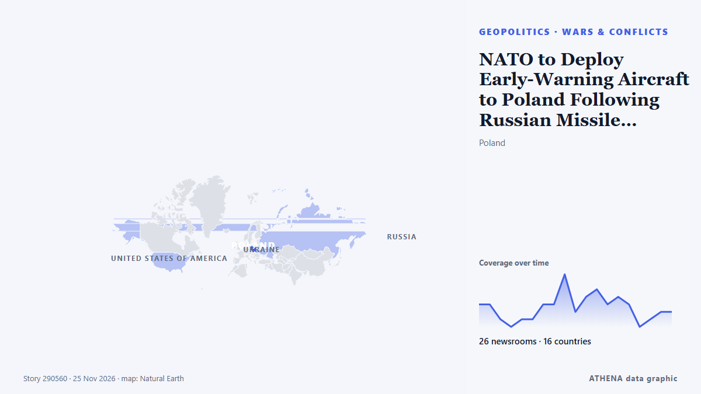

Γεωπολιτική, Πολιτική & Ασφάλεια
ΧορηγούμενοΠαρουσιάζεται από  Cybernetics and Artificial Intelligence Lab Welcome to the Cybernetics and Artificial Intelligence Laboratory, established at the Department of Business Administration of the National and Kapodistrian University of Athens. The lab is headed by Professor Dimitrios Thomakos. The lab aims to do research that can be published in top venues. Our research uses tools and methods of Artificial Intelligence, and lies in the following areas: - Forecasting - Decision making - Cyber security - Finance We are always looking forward to collaborating with exceptional students!
Cybernetics and Artificial Intelligence Lab Welcome to the Cybernetics and Artificial Intelligence Laboratory, established at the Department of Business Administration of the National and Kapodistrian University of Athens. The lab is headed by Professor Dimitrios Thomakos. The lab aims to do research that can be published in top venues. Our research uses tools and methods of Artificial Intelligence, and lies in the following areas: - Forecasting - Decision making - Cyber security - Finance We are always looking forward to collaborating with exceptional students!
Οι τίτλοι των ειδήσεων παρουσιάζονται στα αγγλικά, όπως δημοσιεύτηκαν.

Πόλεμοι & συγκρούσειςNATO to Deploy Early-Warning Aircraft to Poland Following Russian Missile Incidents
NATO has agreed to provide Poland with an AWACS early-warning aircraft after three Russian Kh-101 missiles detonated on its territory. από Kyiv Post
| 12 Νοε | 267 |
|---|---|
| 13 Νοε | 223 |
| 14 Νοε | 179 |
| 15 Νοε | 198 |
| 16 Νοε | 275 |
| 17 Νοε | 265 |
| 18 Νοε | 251 |
| 19 Νοε | 257 |
| 20 Νοε | 229 |
| 21 Νοε | 160 |
| 22 Νοε | 152 |
| 23 Νοε | 226 |
| 24 Νοε | 144 |
| 25 Νοε | 23 |
Netanyahu's incitement is fueling violence against Arabs in Israel
Former deputy governor tells Central Banking prime minister’s proposals are ‘stupid’ and ‘crazy’ από Central Banking
35 Migrants, Including Children, Detained near Black Sea Village of Sinemorets
All 12 crew members of the cargo ship BETUL 8, which sank in Bulgaria's exclusive economic zone in the Black Sea, have been rescued, the Bulgarian National Radio (BNR) reported, citing the conclusion… από Novinite
Rubio condemns Houthi attacks on Saudi Arabia
During a call with his Saudi counterpart after a Houthi drone attack on Riyadh wounded 11, the two officials also stressed the need for freedom of navigation. από JNS
Ukrainian drones reportedly strike 2 Russian oil refineries in massive attack
Ukrainian forces struck two Russian oil refineries, setting the sites ablaze in a massive attack overnight on Nov. από Kyiv Independent
Israeli Defense Minister Says Iran Developing Chemical Weapons
Israel's defense minister said Iran could not yet strike Israel with chemical weapons, while Yashar leader Gadi Eisenkot said he saw no immediate threat requiring action before a new government is… από Haaretz (English)
Several Russian aircraft flew into air defense zone: South Korea
SEOUL, South Korea, Nov 24, (AP): South Korea scrambled fighter jets Tuesday to chase away Russian military aircraft that flew inside the country’s air defense identification zon... από Arab Times
Cybersecurity Breach Reported At CIA And National Intelligence Director’s Office
The breach impacted open-source intelligence data. από Forbes Business
Ukraine Insists Attack on Russian Ships in Libya was Self-Defense
Ukraine's foreign minister said on Tuesday a drone attack against a Russian military vessel and cargo ship in Libyan waters at the weekend was a legitimate act of self-defense, following criticism… από gCaptain
Andy Burnham government confirms when £100 payment will arrive
New guidance issued today sets out how eligible residents will receive the support. από Liverpool Echo
The Big Disconnect in Kushner’s “Article 5-Like” Security Offer for Ukraine in Russia Talks
U.S. Envoy Jared Kushner's outline for Ukraine's postwar security could work, but the administration's actions and rhetoric are undermining its prospects. από Just Security
Trump says trade deal reached between the U.S. and the Philippines
President Donald Trump announced a trade deal had been reached between the U.S. and the Philippines during a banquet with Philippine President Ferdinand Marcos Jr. από NBC News (World)
UK’s MI5 warns local defense firms of Russian sabotage risk
The alert urges industry to respond immediately and “reduce opportunities for hostile actors to identify your organisation or people as targets, conduct hostile reconnaissance, and attack people… από Breaking Defense
Libya: 2 dead after Ukrainian attack on Russian warship in Benghazi
The head of the eastern administration in Libya has confirmed that two Libyan soldiers succumbed to their injuries. από DW English
Putin says Ukraine hits Russian oil plants despite Trump's requests, promises retaliation
MOSCOW, Nov 24 - Ukraine has continued attacks on Russian oil refineries despite requests from US President Donald Trump to refrain, Russian leader Vladimir Putin said on Tuesday, pledging to… από The Straits Times
US Imposes Sanctions on Dozens Linked to Iran’s Shadow Banking Networks
By Andrea Shalal WASHINGTON, Nov 23 (Reuters) - The Trump administration has issued new Iran-related sanctions targeting dozens of people and entities, the Treasury Department said on Monday… από Al-Monitor
Moscow accuses Estonia of hostile actions on ‘verge of triggering open war’
Among a list of accusations, Russia said Estonia had allowed Ukraine to use its airspace “on the quiet” to attack Russian targets. από The Straits Times
Drones attack several oil refineries in Russia, sparking fire – photos, video
Explosions and fires have been reported near the Novokuibyshevsk and Syzran oil refineries in Russia's Samara Oblast following suspected drone attacks. από Ukrainska Pravda (English)
US Midterm Elections and South African Implications
Elizabeth Sidiropoulos discusses what the US midterm elections could mean for Congress, the cracks emerging in Donald Trump’s support base, and how economic pressures and foreign policy could shape… από SAIIA
Eisenkot invites Netanyahu's Likud for Israeli coalition talks
JERUSALEM: Gadi Eisenkot, who is tasked with forming the next Israeli government, has invited the right-wing Likud party of caretaker prime minister Benjamin Netanyahu for coalition talks, his party… από New Straits Times
Hungarian PM says he hosted refugees from Zakarpattia Oblast
Prime Minister Péter Magyar says Hungary has provided refuge to tens of thousands of Ukrainians since Russia's full-scale invasion, including many ethnic Hungarians. από Ukrainska Pravda (English)
EU to ban Russian flags and teams at European sports events, in new sanctions round
"We are introducing bans on Russian teams and athletes competing under the Russian flag. από EUobserver
More than 700,000 Russian troops died in the war in Ukraine by late September 2026, Meduza and Mediazona estimate
On November 1, news broke that hackers from the Belarusian Cyber Partisans and Silent Crow had breached the website of Rosstat, Russia’s federal statistics agency, and obtained data on Russian… από Meduza (English)
Israeli strikes in Gaza kill 7 including senior Hamas security official
Several other people were in critical condition following the same strike. από The Straits Times
Israeli settler terrorism surges by 42% in occupied West Bank
Settler terrorism in the West Bank has soared to new heights in 2026 as members of the far-right government encourage extremists to raid Palestinian villages. από The New Arab
Russia could put nuclear weapon in orbit by end of 2026, German media report
Russia could launch a satellite carrying a nuclear weapon into orbit before the end of the year, according to a joint report by German broadcasters WDR and NDR and the newspaper Süddeutsche Zeitung… από Novaya Gazeta Europe (EN)
Pentagon Delays Transfer of 60 Patriot Missiles to Ukraine – FT
US Defense Secretary Pete Hegseth is reportedly delaying the transfer of around 60 Patriot interceptor missiles already purchased by Ukraine’s Western allies. από Kyiv Post
Ireland hit with more bomb threats as security preparations ramp up for EU summit
Dublin is preparing for the largest gathering of heads of state and government ever hosted by Ireland. από TheJournal.ie
EU unveils 22nd Russia sanctions package as war nears sixth year
European Commission President Ursula von der Leyen unveiled the 27-member bloc's proposed 22nd package of Russia-related sanctions. από UPI World News
Iraqi security forces deploy in Iran-backed militia stronghold
By Maher Nazeh, Muayad Hameed and Eman Abouhassira JURF AL-SAKHAR, Iraq, DUBAI, Nov 20 (Reuters) - Iraqi security forces deployed inJurf al-Sakhar, a stronghold of the Kataib Hezbollaharmed group, on… από Al-Monitor
Ukraine sank Russian corvette Merkury off Libya: Zelenskyy
A Russian Navy guided-missile corvette – assessed to be the Project 20380 Steregushchiy-class warship Merkury – has been engulfed in flames following an explosion in the Libyan port of Benghazi… από Kyiv Post
Democrats Win at Least 258 House Seats, Matching Their Biggest Majority Since 1992
Democrats got their dream of the House majority in the midterms, but their exact numbers in the lower chamber are still in flux with recounts and runoffs underway in some of the country’s closest… από The Hill
Estonia to close border with Russia for at least six months
The decision is a response to Russia’s ongoing hostile actions against Estonia. από The Straits Times
US intelligence chief predicts more tech outages as systems undergo upgrades
Jay Clayton said the upgrades were necessary to improve performance and cybersecurity as technological advances strain older systems. από Free Malaysia Today
Ukraine says Russian strikes kill 15 in Kyiv region
DYMER: A Russian strike on a block of flats north of Kyiv killed one person after causing the building to partially collapse, Ukraine said on Sunday, warning there could be more vi... από Oman Observer